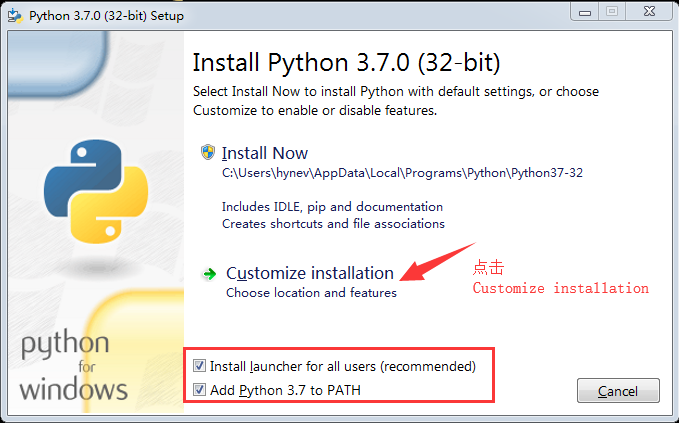
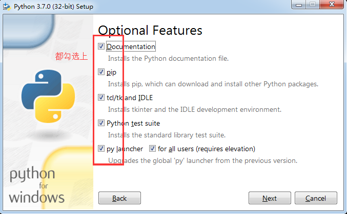
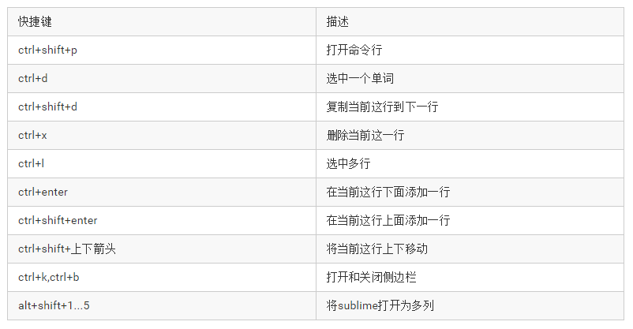

Python相关软件安装：
Python软件安装：
Python目前最新版本是Python3.7。可以到官网下载：https://www.python.org/。
- 双击打开
python-3.7.0.exe。


然后点击安装即可。
Sublime Text：
Sublime Text介绍：
Sublime编辑器是一款轻量级的代码编辑器，是收费的，但是可以无限期使用。官网下载地址：https://www.sublimetext.com/3。
安装Package Control插件：
Sublime可以用来做很多语言的开发。但是如果想要把他打造成一个很顺的开发工具，还需要安装许多插件。而安装插件我们可以使用Package Control，Package Control是一个管理其他插件的插件。安装Package Control插件的方式如下：打开sublime->按ctrl+`->输入以下代码：
import urllib.request,os,hashlib; h = '6f4c264a24d933ce70df5dedcf1dcaee' + 'ebe013ee18cced0ef93d5f746d80ef60'; pf = 'Package Control.sublime-package'; ipp = sublime.installed_packages_path(); urllib.request.install_opener( urllib.request.build_opener( urllib.request.ProxyHandler()) ); by = urllib.request.urlopen( 'http://packagecontrol.io/' + pf.replace(' ', '%20')).read(); dh = hashlib.sha256(by).hexdigest(); print('Error validating download (got %s instead of %s), please try manual install' % (dh, h)) if dh != h else open(os.path.join( ipp, pf), 'wb' ).write(by)
然后按enter键，即可完成安装。
安装完Package Control后，输入ctrl+shift+p，然后输入Install Package后即可安装插件了。
安装Anaconda插件：
Anaconda插件可以让你在sublime中写代码的时候增加提示。也可以进行代码之间的跳转等。安装方式如下：
输入ctrl+shift+p后打开输入框，然后输入Install Package后按enter键，然后输入anaconda即可安装了。
Anaconda使用教程：
- 把光标放在函数、类、变量上，然后按
ctrl+b可以跳转到定义的地方。 - 如何关掉正行代码的边框：在
Preferences->Package Settings->Anaconda->Settings-User中添加以下代码：{ "anaconda_linting": false }
Sublime常用快捷键：

安装Pycharm：
- 官网下载地址：https://www.jetbrains.com/pycharm/download/#section=windows。
- 激活方式。
- 选择纯
Python项目。 - 添加
Python3解释器。